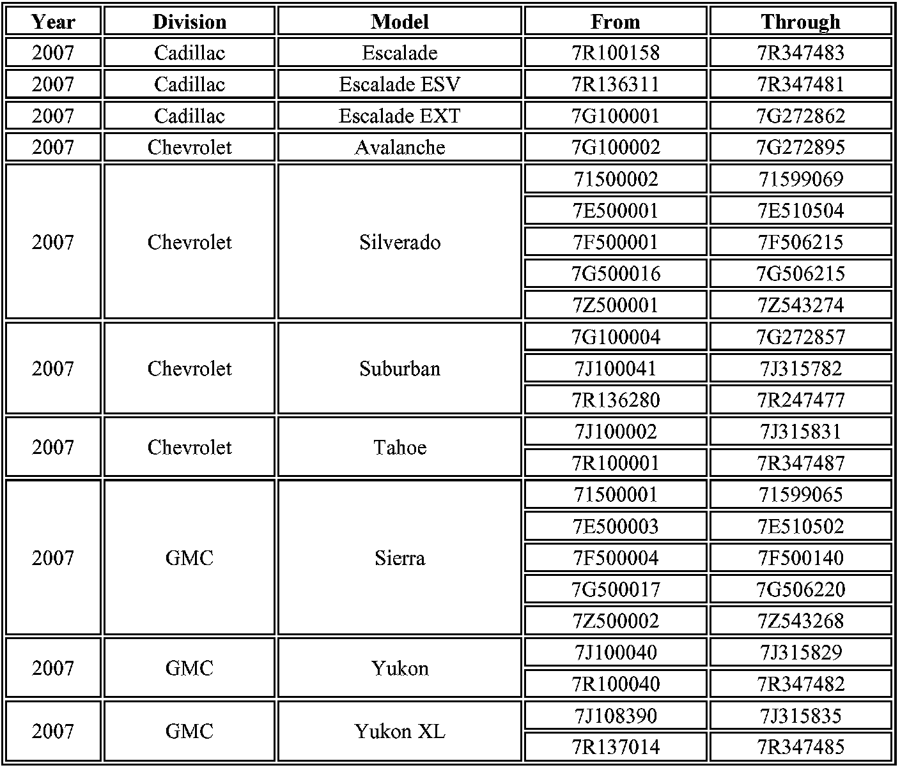

Campaign - BCM Reprogramming for Battery Drain
Subject:Service Update for Inventory and Customer Vehicles-Battery Rundown-Expires with Base Warranty
# 07033B - (02/15/2007)
Models:
2007 Cadillac Escalade, Escalade ESV, Escalade EXT
2007 Chevrolet Avalanche, Silverado, Suburban, Tahoe
2007 GMC Sierra, Yukon, Yukon XL
THE SERVICE PROCEDURE IN THIS BULLETIN HAS BEEN REVISED TO ADDRESS VEHICLES WITHOUT A DRIVER INFORMATION CENTER (DIC) AND POWER DOOR LOCKS/WINDOWS, AND A CONDITION WHERE THE ODOMETER READING DISPLAYS METRIC UNITS INSTEAD OF ENGLISH UNITS.
DISCARD ALL COPIES OF BULLETIN 07033A, ISSUED FEBRUARY 2007.
TECHNICANS MAY EXPERIENCE SLOW PERFORMANCE USING THE TIS2 WEB APPLICATION WHEN REPROGRAMMING THE VEHICLE TO CORRECT THE CONDITION TECHNICANS MAY NOTICE THE SLOWER APPLICATION PERFORMANCE FROM MID-MORNING UNTIL LATE AFTERNOON.
TO ASSIST IN IMPROVED PERFORMANCE AND REDUCE PROGRAMMING TIME. IT IS RECOMMENDED TO COMPLETE THE BULLETIN PROCEDURE ON CUSTOMER VEHICLES FIRST. VEHICLES IN INVENTORY SHOULD BE PROGRAMMED DURING OFF PEAK HOURS IF SLOW PERFORMANCE IS EXPERIENCED.
Purpose
This bulletin provides a service procedure to reprogram the body control module (BCM). On these vehicles, and under certain conditions such as operating the radio with the engine off the battery can become discharged, preventing engine start-up.
This service procedure should be completed as soon as possible on involved vehicles currently in dealer/retailer inventory and customer vehicles that return to the dealer/retailer for any type of service during the New Vehicle Limited Warranty coverage period.
Vehicles Involved

A list of involved vehicles currently in dealer inventory is attached to the Administrative Message (US) or Dealer Communication (Canada) used to release this bulletin. Customer vehicles that return for service, for any reason, and are still covered under the vehicle's base warranty, and are within the VIN breakpoints provided below, should be checked for vehicle eligibility in the appropriate system listed below.
Important:
Dealers are to confirm vehicle eligibility prior to beginning repairs by using GMVIS. Not all vehicles within the above breakpoints may be involved.
Service Procedure
Important:
Technicians may experience slow performance using the TIS2 web application when reprogramming the vehicle to correct the condition. Technicians may notice the slower application performance from mid-morning until late afternoon.
To assist in improving performance and reduce programming time, it is recommended to complete the bulletin procedure on customer vehicles first. Vehicles in inventory should be programmed during off peak hours if slow performance is experienced.
Important:
The calibration numbers required for this service procedure are programmed into control modules via a Techline Tech 2(R) scan tool and the Techline Information System (TIS) terminal with the calibration update. Use TIS 2 Web version 2.0 for 2007 (available on 02/04/07) and on TIS DVD version 2.0/2007 or later, that was mailed to dealers on 02/14/2007. If you cannot access the calibration, call the Techline Customer Support Center.
Notice:
Before reprogramming, please check the battery condition to prevent a reprogramming error of any of the modules due to battery discharge. Battery voltage must be between 12 and 16 volts during reprogramming. If the vehicle battery is not fully charged, use jumper cables from an additional battery. Be sure to turn off or disable any system that may put a load on the battery, such as automatic headlamps, daytime running lights, interior lights, heating, ventilation, and air conditioning (HVAC) system, radio, engine cooling fan, etc. A programming failure or control module damage may occur if battery voltage guidelines are not observed.
The ignition switch must be in the proper position. The Tech 2(R) prompts you to turn ON the ignition, with the engine OFF. DO NOT change the position of the ignition switch during the programming procedure, unless instructed to do so.
Make certain all tools connections are secure, including the following components and circuits:
^ The RS-232 communication cable port
^ The connection at the data link connector (DLC)
^ The voltage supply circuits
DO NOT disturb the tool harnesses while programming. If an interruption occurs during the programming procedure, programming failure or control module damage may occur.
DO NOT turn OFF the ignition if the programming procedure is interrupted or unsuccessful. Ensure that all control module and DLC connections are secure and the TIS terminal operating software is up to date.
Tech 2 Pass-Thru Method for the Body Control Module (BCM)
1. Verify that there is a battery charge of 12 to 16 volts. The battery must be able to maintain a charge during programming. Use an additional jump battery if necessary.
^ If the vehicle will not start, test and charge the battery. Refer to SI for battery testing and charging information, if required.
^ If the battery will not hold a charge, replace the battery/Do NOT replace the battery unless it can't be charged or a leak and/or physical damage is present.
2. Connect the Tech 2 to the vehicle and the TIS terminal.
3. Turn the ignition to the ON position with the engine OFF.
4. After all warning chimes inside the vehicle have stopped, turn on the Tech 2.
5. On the TIS terminal go into SPS Programming.
6. Select Pass Thru programming.
7. Follow instruction on the TIS terminal. When you get to the Supported Controllers screen.
7.1. Scroll down in the top box and select BCM (Body Control Module).
7.2. In the lower box select Normal.
7.3. Select Next.
Important:
Vehicles without the Driver Information Center (DIC) and power door locks/windows will have two calibrations from which to choose. A selection is required before you can select NEXT. Select calibration 25814828. Do not select calibration 25788372.
8. Select NEXT when the calibrations screen displays.
9. Follow on-screen prompts until programming is completed.
10. When programming is complete.
10.1. Turn off Tech 2.
10.2. Turn the ignition switch to the OFF position.
11. Wait 30 seconds.
12. Turn the ignition switch to the ON position with engine OFF.
13. Turn on the Tech2.
14. Go into diagnostics and check for DTC codes.
15. Clear all codes.
Important:
Failure to successfully reprogram the BCM may result in the odometer displaying mileage in metric units instead of English units. To reset the odometer to display mileage in English units, remove the 10 amp fuse from the underhood BEC. Do not reinstall the fuse for 5 minutes.
Claim Information
For vehicles repaired under this service update, use the table.

Disclaimer